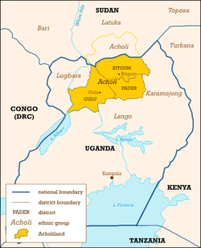

Mapping Our Ancestral Connections
Below is a representation of the Okot family lineage originating from the heartlands of Acholi. We continue to research and update our genealogy as we discover more about our ancestors and connect with distant relatives.
Note: This is a simplified version. Contact the family historian for detailed records.


1840 - 1920
Founder of Okot Village
1865 - 1945
First Son
1870 - 1950
Second Son
1875 - 1960
First Daughter
1895 - 1975
1900 - 1980
1905 - 1990
1910 - 1995
1930 - Present
1935 - 2015
1940 - Present
1945 - Present
1970 - Present
1975 - Present
1980 - Present
1985 - Present
| Name | Birth Year | Location | Generation |
|---|---|---|---|
| Chief Okot Oloo | 1840 | Gulu, Uganda | 1st |
| Okot Olum | 1865 | Gulu, Uganda | 2nd |
| Johnson Okot | 1895 | Kampala, Uganda | 3rd |
| James Okot | 1930 | London, UK | 4th |
| Michael Okot | 1970 | Nairobi, Kenya | 5th |
Help us grow our family tree! If you have information about family members not listed, please contact us.